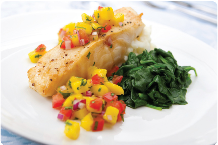

Sea Bass with Mango Salsa
Ingredients
4 skinless sea bass fillets (4 ounces each), about 1 inch thick
1 teaspoon Tailai USA Tex Mex Chipotle Seasoning
Nonstick cooking spray
1 ripe mango, peeled, pitted and diced, or 1 cup diced drained bottled mango
2 tablespoons chopped fresh cilantro
3 teaspoons fresh lime juice
1/4 teaspoon Tailai USA Orange & Lemon Pepper
Instructions
Prepare grill or preheat broiler. Sprinkle fish with seasoning; coat lightly with cooking spray. Grill fish over medium coals or broil 5 inches from heat 4 to 5 minutes per side or until fish flakes when tested with fork.
Meanwhile, combine mango, cilantro, lime juice and jalapeño pepper in small bowl; mix well. Serve salsa over fish.
Makes 4 servings.